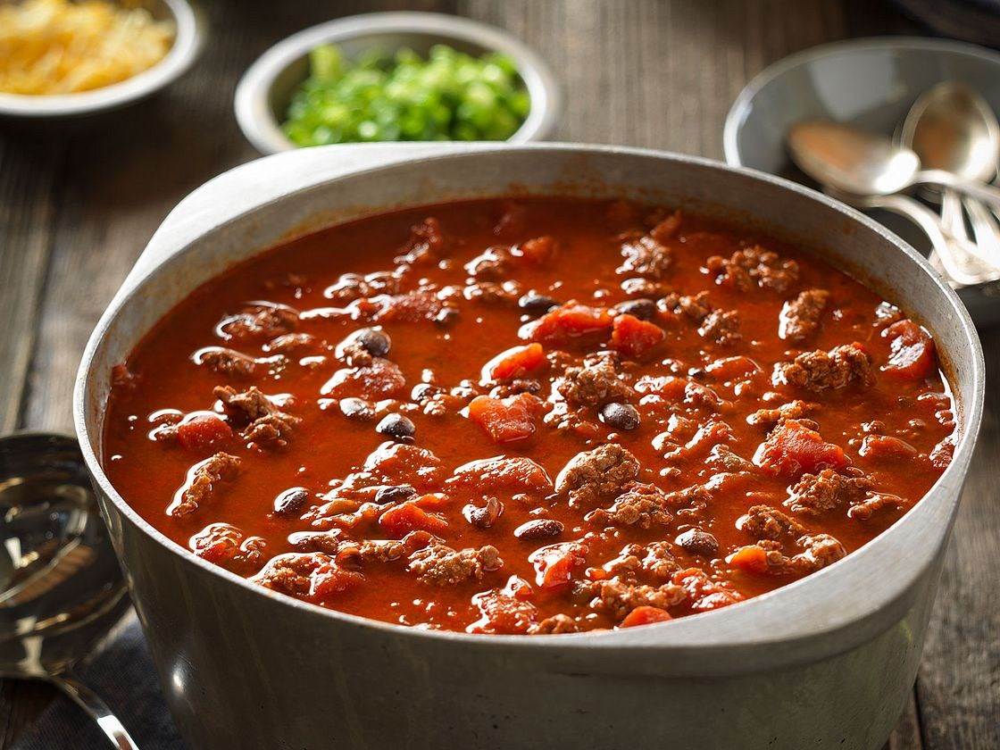

Beef Chili

Description
Beef chili is a tasty dish with ground beef, flavorful tomato sauce, and spices that give it a kick. It's a hearty bowl of comfort, topped with cheese and sour cream for extra goodness.
Ingredients
- 1 pound ground beef
- 1 onion, chopped
- 2 cloves garlic, minced
- 1 can diced tomatoes
- 1 can kidney beans, drained and rinsed
- 1 can black beans, drained and rinsed
- 1 can tomato sauce
- 1 tablespoon chili powder
- 1 teaspoon cumin
- Salt and pepper to taste
Steps
- In a large pot over medium heat, cook the ground beef until browned. Drain excess fat.
- Add chopped onions and minced garlic to the pot. Cook until onions are softened.
- Stir in diced tomatoes, kidney beans, black beans, and tomato sauce.
- Season with chili powder, cumin, salt, and pepper. Mix well.
- Bring the chili to a simmer, then reduce the heat to low. Let it simmer for at least 30 minutes to allow flavors to meld.
- Taste and adjust seasonings if needed. Serve hot, optionally topped with shredded cheese, sour cream, or chopped green onions.